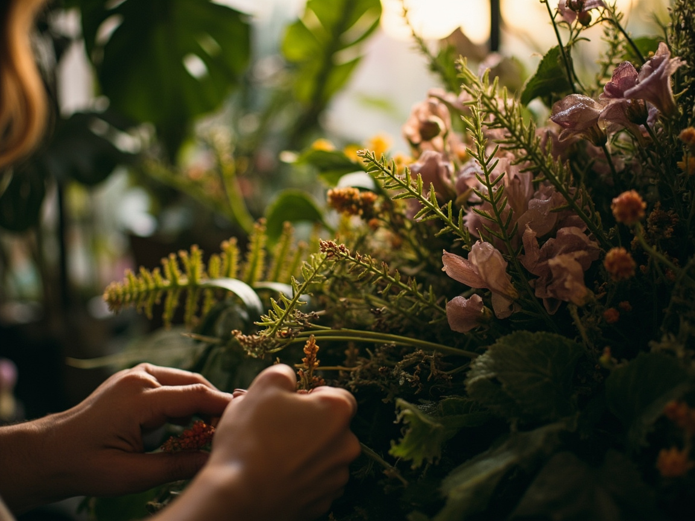

Wilde Rosen, Fenchelgrün, Schleierkraut und eine Prise Dill. Ein Strauß wie eine Wiese am frühen Morgen.
unser klassikerFougère ist eine botanische Design-Werkstatt in der Tradition französischer Gärtnereien. Wir arbeiten saisonal, ehrlich und ein wenig ungezähmt — mit Sträußen, Kuratierungen und Workshops, die das Wilde ins Haus holen.


„Ein Strauß darf hängen, darf sich neigen, darf atmen. Was nicht passt, ist die Symmetrie — nicht die Schönheit.“
Wir verstehen Blumen nicht als Dekoration, sondern als lebendiges Material. Jede Saison bringt ihre eigene Sprache mit: das erste Grün des Vorfrühlings, die schwere Pracht des Hochsommers, das vergilbte Gold des Oktober.
In unserer Werkstatt arbeiten wir mit regionalen Gärtnereien, eigenen Beeten und Wildsammlungen. Wir verzichten auf Sprüh Lacke und Importware — dafür duften unsere Sträuße nach dem Garten, aus dem sie kommen.
Drei Kompositionen aus der aktuellen Saison. Jeder Strauß wird im Atelier von Hand gebunden — mit Stilen, die im Garten gerade am schönsten sind.
Wilde Rosen, Fenchelgrün, Schleierkraut und eine Prise Dill. Ein Strauß wie eine Wiese am frühen Morgen.
unser klassiker
Bauernhortensie in Dusty-Rose, dazu Rainfarn und getrockneter Schleier — textil, fast schon Stoff.
lieblich & ruhigErdige Komposition aus Trockenblumen, Gräsern und späten Dahlien. Für den Schreibtisch.
hält wochenWir begleiten Räume von der ersten Skizze bis zur Pflege. Jedes Projekt beginnt mit einem Gespräch über Licht, Nutzung und Stimmung — nicht mit einer Pflanzenliste.
Wir besuchen den Raum, prüfen Lichtverhältnisse und besprechen Stil und Pflegeaufwand.
Sie erhalten ein Curating-Konzept mit Pflanzenarten, Töpfen und Arrangement-Skizzen.
Wir setzen das Konzept um und übernehmen auf Wunsch die regelmäßige Pflege.
Drei Formate pro Saison. Kleine Gruppen, viel Zeit, eigenes Werkzeug. Jeder Workshop endet mit einem eigenen Stück, das du mitnimmst.
Lerne die Grundlagen des freien Bindens: Struktur, Farbführung und das Spiel mit asymmetrischer Form.
Vom Ernten über das Trocknen bis zum fertigen Hängestrauß. Mit Material aus dem eigenen Beet.
Ein kleines Ökosystem im Glas. Wir arbeiten mit Moos, Farne und erdigen Akzenten.
Ob saisonaler Strauß zur Hochzeit, ein Café, das grüne Begleitung sucht, oder ein Workshop-Platz im Sommer — wir antworten innerhalb von 48 Stunden.
bonjour@fougere-studio.fr